Diseño de la identidad visual
Nombre
"De feria" es una alusión a frases comunes, como:
- "¡Vamos de feria!"
- "Frescura, variedad y precios de feria"
- "De feria": de gratis, extra
- "Tras de feria": adicionalmente, para rematar, tras de todo
Los nombres utilizados en el proyecto son:
- de feria / deferia / De Feria / DeFeria
- deferia.cr (URL del sitio web)
Logo

Variedades de color


Tipografía
La identidad visual, incluyendo el sitio web, utiliza dos fuentes tipográficas:
- Nunito Sans (disponible en Google Fonts): sans serif (palo seco) para textos y el logo.
- Petrona (disponible en Google Fonts): serifa para títulos.
Paleta de colores
Paleta seleccionada para reflejar la riqueza visual de las ferias, con colores en tonos tierra pero con altos contrastes.
| Nombre | HEX | RGB | Muestra |
|---|---|---|---|
| Amarillo | EBB615 | 235, 181, 21 | |
| Verde | 008D4A | 0, 141, 74 | |
| Azul | 3879B5 | 56, 121, 182 | |
| Gris | D1C5BA | 209, 197, 186 | |
| Rojo | E64128 | 230, 65, 40 | |
| Café | CD7535 | 205, 117, 53 | |
| Rosado | F29196 | 242, 145, 150 | |
| Negro | 000000 | 0, 0, 0 |
Elementos gráficos
Para complementar la identidad visual, fueron diseñados una inmensa cantidad de íconos para representar los productos de la feria en nuestra base de datos.


 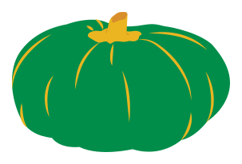
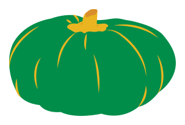

 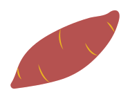
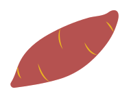
 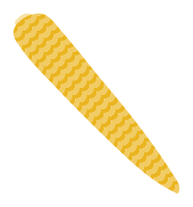
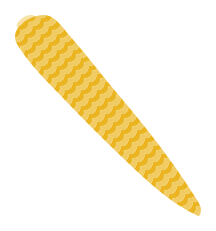


 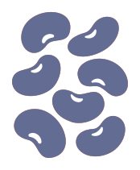
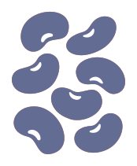


 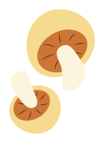
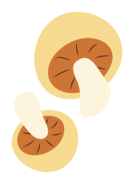
 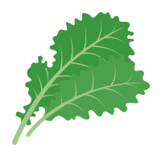
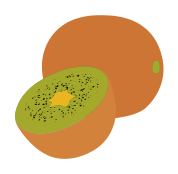
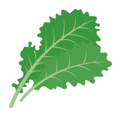
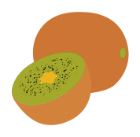


 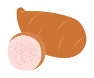
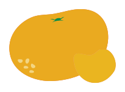
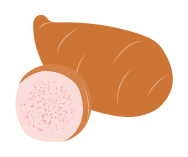
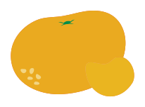


 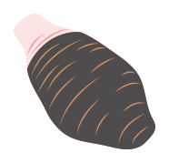
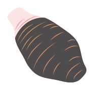

 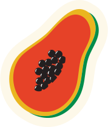
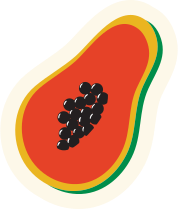


 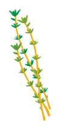
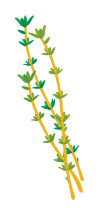